CRM первой линии: линии, каналы на менеджера, передача и сквозная аналитика встают на Chatwoot за 3–4 дня, автодилер – на той же основе
Вывод. Почти всё, что ты хочешь, Chatwoot уже умеет: линии – это его команды, «каналы на менеджера» – участники канала, передача – смена ответственного с заметкой, статусы и метки – свои. Нашего кода нужно немного: обязательная заметка при передаче, обязательные поля перед закрытием, «повторный клиент – к прежнему менеджеру» и разрез аналитики по менеджерам с деньгами. Минимум для 2–3 менеджеров – около 27 часов (≈ 27 000 ₽, 3–4 рабочих дня, оценка). Автодилер – та же основа плюс своя «сделка» с машиной, трейд-ином и оплатой, около 22 рабочих дней (оценка).
Как понял «автодилер»: версия этой CRM для продажи машин (пример – Community Dealer). Если ты имел в виду программу «АвтоДилер Онлайн», где у TEYES запись и деньги, – это другая задача, она в вопросе 5.
Всё ниже – предложение, ждёт твоего «да». Цифры в макетах – пример, не факт. Зелёная пометка на макетах – Chatwoot умеет сам, синяя – наш код поверх него.
Нужно от тебя
- Буквы по 7 вопросам внизу. Совет: 1А 2Б 3А 4А 5А 6А 7А.
- Имена и почты менеджеров: кто на первой линии, кто на второй (мастер, подбор).
- Часы работы TEYES и EV, работает ли суббота.
Путь клиента одной картинкой
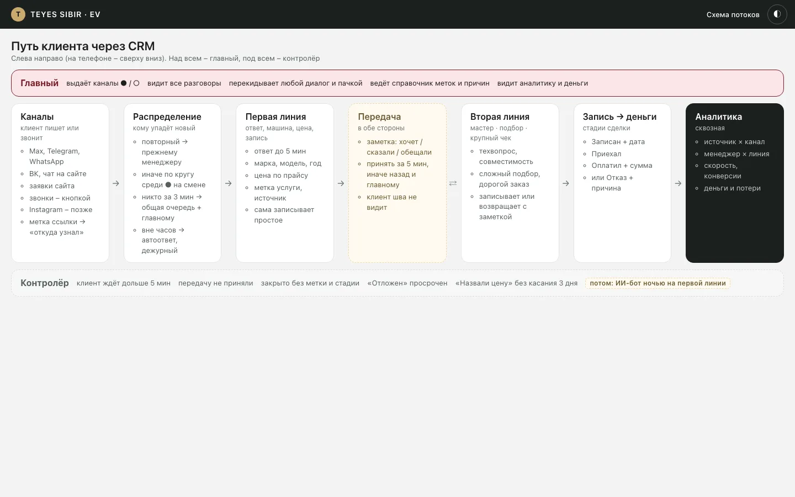
Открыть схему · на телефоне она идёт сверху вниз.
1. Роли и каналы: главный раздаёт, первая линия отвечает, вторая решает сложное
Кто что видит и может
| Роль | В Chatwoot | Видит | Может | Не может |
|---|---|---|---|---|
| Главный (ты) | администратор | все разговоры и каналы, аналитику и деньги | выдать каналы, передать любой диалог и пачкой, править метки, причины отказа, часы | – |
| Первая линия | агент, команда «Первая линия» | новые из своих каналов ●, свои разговоры | ответить, узнать машину, назвать цену по прайсу, записать, поставить метки и стадию, передать | менять справочники, видеть чужие каналы ○/– |
| Вторая линия (мастер, подбор, крупный чек) | агент, команда «Вторая линия» | только переданное ему и своё | ответить, записать, вернуть на первую линию с заметкой | получать новые (их раздаёт только первой линии) |
| Наблюдатель (партнёр, маркетолог) | нет входа в Chatwoot | только страницу аналитики, без имён и телефонов | смотреть цифры | писать клиентам |
Наблюдателя в Chatwoot не заводим: своих ролей в бесплатной версии нет, есть только «администратор» и «агент» (проверено 21.10, в РЕШЕНИЯ.md). Поэтому наблюдатель – это вход на нашу страницу аналитики, как сейчас у тебя на /hooks/analitika.
Каналы на менеджера: три состояния клетки
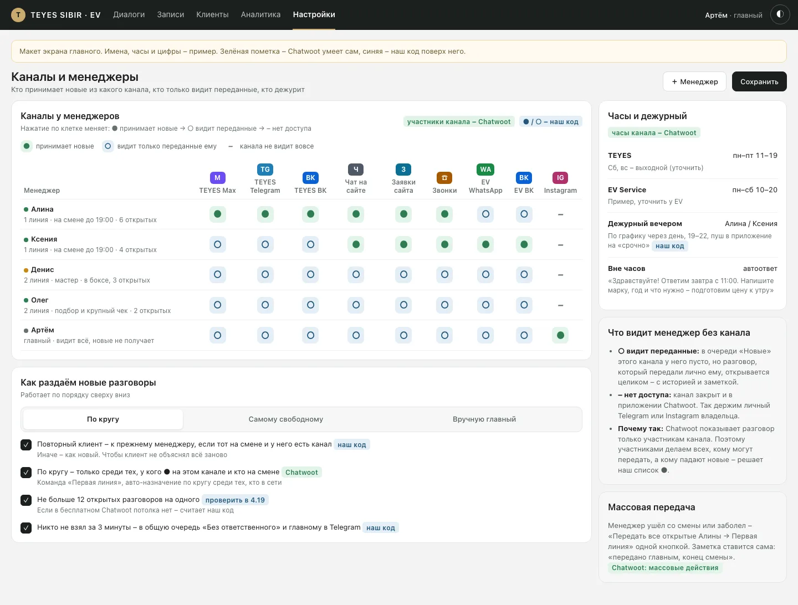
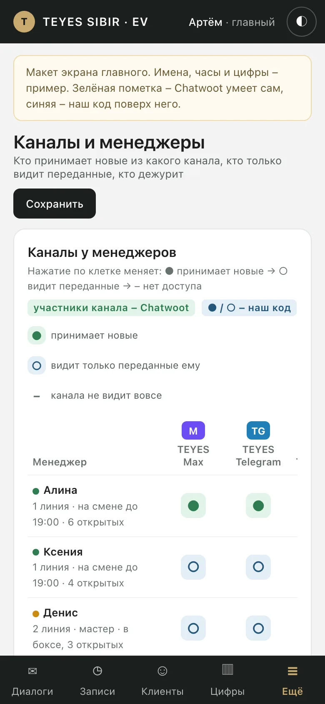
Открыть макет «Каналы и менеджеры»
- ● принимает новые – новые разговоры из этого канала падают ему.
- ○ видит переданные – в очереди «Новые» этого канала у него пусто, но разговор, переданный лично ему, открывается целиком.
- – нет доступа – канала не видно и в приложении Chatwoot (так держим личный Telegram или Instagram).
Почему три, а не «есть / нет»: Chatwoot показывает разговор только участникам канала. Если мастер не участник WhatsApp, ему нельзя передать клиента из WhatsApp. Поэтому участниками канала делаем всех, кому могут передать, а кому падают новые – решает наш список ●. Это главное место, где нужен свой код (≈ 12 ч в этапе 2; в этапе 1 – так же, но настройкой руками).
Как раздаём новые
- Повторный клиент – к прежнему менеджеру, если тот на смене и у него ● на этом канале. Клиент не объясняет всё заново. Свой код (≈ 8 ч).
- Иначе по кругу среди тех, у кого ●, и кто в сети. Из коробки: правило автоматизации «новый разговор → команда Первая линия» + авто-назначение по кругу.
- Потолок открытых на менеджера (например, 12). В бесплатной версии может не быть – проверить на 4.19; если нет, считает наш код.
- Никто не взял за 3 минуты – разговор в общей очереди «Без ответственного» и тебе в Telegram (бот оповещений уже есть,
bridges/opoveshcheniya.py). - Вне часов – автоответ канала (уже настроен, пн–пт 11–19 НСК) и, если решишь, дежурный вечером с пушем на слово «срочно».
Ушёл со смены или заболел – «Передать все открытые Алины → Первая линия» одной кнопкой (массовые действия Chatwoot), заметка ставится сама.
2. Передача, статусы и метки: шов не виден клиенту, «чей ход» не путается с «где деньги»
Передача диалога
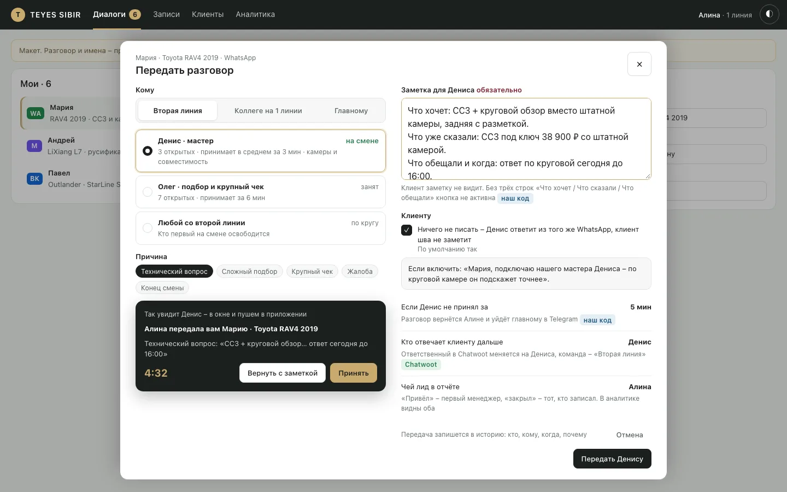
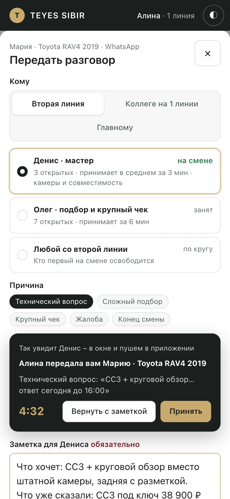
Открыть макет «Передача диалога»
- Куда: на вторую линию (конкретному человеку или «любому на смене»), коллеге на первой линии, главному. Обратно – кнопкой «Вернуть с заметкой».
- Заметка обязательна, три строки: что хочет, что уже сказали (цена, сроки), что обещали и когда. Клиент её не видит. Без трёх строк кнопка серая – свой код; в этапе 1 – быстрый ответ-шаблон
/передачаи правило в регламенте. - Клиент шва не замечает: второй менеджер пишет из того же WhatsApp или Max, по умолчанию клиенту ничего не сообщаем. Можно включить фразу «подключаю мастера Дениса».
- Таймер принятия: не принял за 5 минут в рабочее время – разговор возвращается отправителю, тебе уходит тревога. Свой код.
- Кто отвечает за клиента: ответить – тот, кто сейчас ответственный в Chatwoot. В отчётах видны двое: «привёл» – первый менеджер (поле ставится само при первом назначении), «записал» – тот, кто поставил «Записан». Так первая линия не теряет бонус, а вторая видит свою конверсию.
- История: каждая передача – строка в истории клиента: кто, кому, когда, почему. Chatwoot сам пишет «назначен такой-то»; причину и заметку пишем рядом.
Статусы: две разные оси
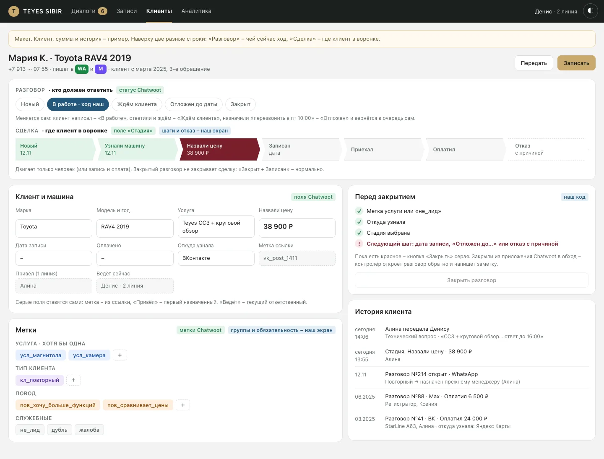
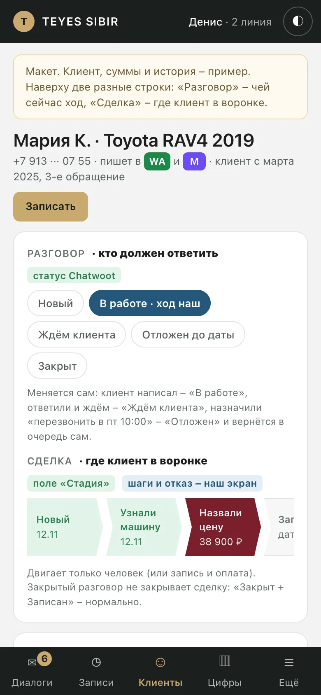
Открыть макет «Карточка клиента»
Путаница уходит, если развести вопросы: «Разговор» отвечает, чей сейчас ход, «Сделка» – где клиент в воронке и деньгах. На экране это две отдельные строки разного вида: кнопки-таблетки и шаги-стрелки.
| Разговор (статус Chatwoot) | Что значит | Как меняется |
|---|---|---|
| Новый | открыт, ответственного нет | сам, при первом сообщении |
| В работе | открыт, ход за нами | сам, когда клиент написал |
| Ждём клиента | ход за клиентом | «отложить до ответа» – вернётся сам, когда клиент напишет |
| Отложен до даты | «перезвонить в пт 10:00» | «отложить до даты» – вернётся сам в это время |
| Закрыт | разговор окончен | человек, только после обязательных полей |
| (Бот отвечает) | разговор у ИИ-бота | занят под бота, если будет – см. раздел 5 |
| Сделка (поле «Стадия») | Обязательно при этой стадии |
|---|---|
| Новый → Узнали машину | марка, модель, год |
| Назвали цену | сумма |
| Записан | дата записи |
| Приехал | – |
| Оплатил | сумма оплаты |
| Отказ | причина из списка |
Правила связи: стадию двигает только человек (или запись и оплата); закрытый разговор не закрывает сделку – «Закрыт + Записан» нормально. «Думает» из нынешнего списка стадий убираем: это «Назвали цену» + «Отложен до даты». Нынешние значения стадий переносим скриптом, аналитику правим вместе с ними.
Метки: справочник
Метки в Chatwoot плоские, поэтому группу задаём приставкой и цветом. Заводит и правит только главный.
| Группа | Примеры | Кто ставит | Обязательна |
|---|---|---|---|
Услуга усл_ |
магнитола, русификация, сигнализация, автозвук, камера, шумка; для EV – ТО, диагностика, ремонт электро | первая линия, при первом ответе | да, хотя бы одна (или не_лид) |
Тип клиента кл_ |
новый, повторный, по гарантии, юрлицо, партнёр | кл_повторный – сам, по прошлым разговорам; остальное – менеджер |
нет |
Повод пов_ |
не работает штатная, хочу больше функций, после другого сервиса, сравнивает цены, срочно | менеджер | нет |
| Служебные | не_лид, дубль, спам, жалоба |
любой | – |
Марку и модель держим полем, а не меткой: у машины она одна, и для отчётов нужен ровный список. «Откуда узнал» – тоже поле со списком.
Перед закрытием обязательны: метка услуги (или не_лид), «откуда узнал», стадия и следующий шаг – дата записи, «отложен до…» или отказ с причиной. В бесплатном Chatwoot обязательных полей нет (проверено 21.10), поэтому: наш экран не даёт закрыть, а если закрыли из приложения в обход – контролёр откроет разговор обратно и напишет заметку.
3. Сквозная аналитика: источник → канал → менеджер → запись → деньги
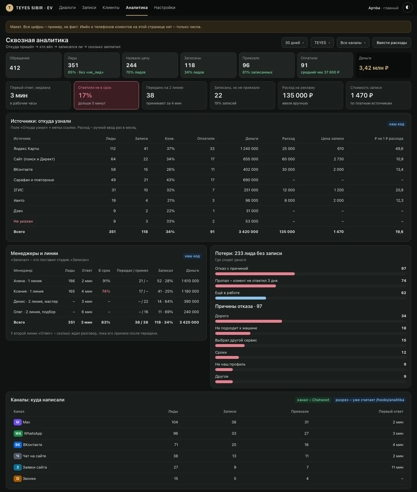
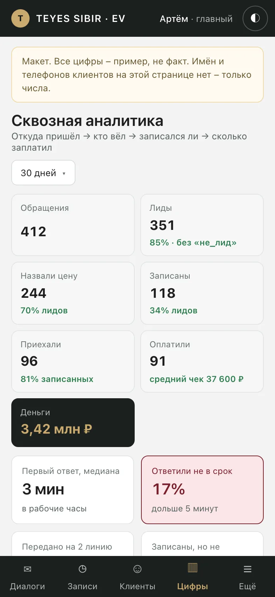
Открыть макет «Сквозная аналитика»
Цепочка и откуда берётся каждое звено
| Звено | Откуда | Есть сейчас |
|---|---|---|
| Источник («откуда узнал») | метка в ссылке (сайт, ВК) ставится сама; иначе менеджер выбирает из списка | поле istochnik считается, но ещё не заведено |
| Канал | канал Chatwoot | да |
| Обращение и лид | разговор; лид – без метки не_лид |
да |
| Менеджер и линия | ответственный и команда Chatwoot, «привёл» – первый назначенный | нет, добавить |
| Скорость ответа | время первого ответа | да, по каналам; Chatwoot ещё и сам считает по менеджерам и командам |
| Запись, приезд | стадия + дата записи | стадии да, даты записи нет |
| Деньги | сумма при «Оплатил» | нет, добавить |
| Расход на рекламу | ручной ввод по источнику раз в месяц | нет |
bridges/analitika.py уже считает воронку, каналы с конверсией и медианой ответа, услуги, причины отказа, источники, заявки по дням и незаполненные карточки. Добавить: менеджеры и линии, передачи, деньги, расходы и стоимость записи, потери.
Что видит главный (сверху вниз, как ты выбрал 17.11: В, А, Б)
- Экран дня: кто ждёт ответа, кому не перезвонили, кто записан на завтра.
- Воронка и потери: обращения → лиды → назвали цену → записаны → приехали → оплатили → деньги; отказы по причинам, «пропал» (клиент молчит 3 дня), «записан, но не приехал».
- Источники и каналы: лиды, записи, деньги, расход, цена записи, сколько рублей выручки на рубль рекламы.
- Менеджеры и линии: ответ, доля «в срок» (до 5 минут), передал / принял, сколько записал, деньги.
Откуда брать деньги – предложение
- Сейчас: менеджер вводит сумму, когда ставит «Оплатил». Ноль интеграций, риск – ошибки руками; ты видишь незаполненные.
- Следом: ночная сверка с «АвтоДилер Онлайн» по телефону клиента – так было задумано в ТЗ 21.10. Нужно узнать, есть ли телефон в их выгрузке.
- Не советую: чеки кассы через ОФД – в чеке обычно нет телефона, сопоставление с клиентом неточное.
4. Автодилер: та же основа, своя сделка с машиной, трейд-ином и оплатой
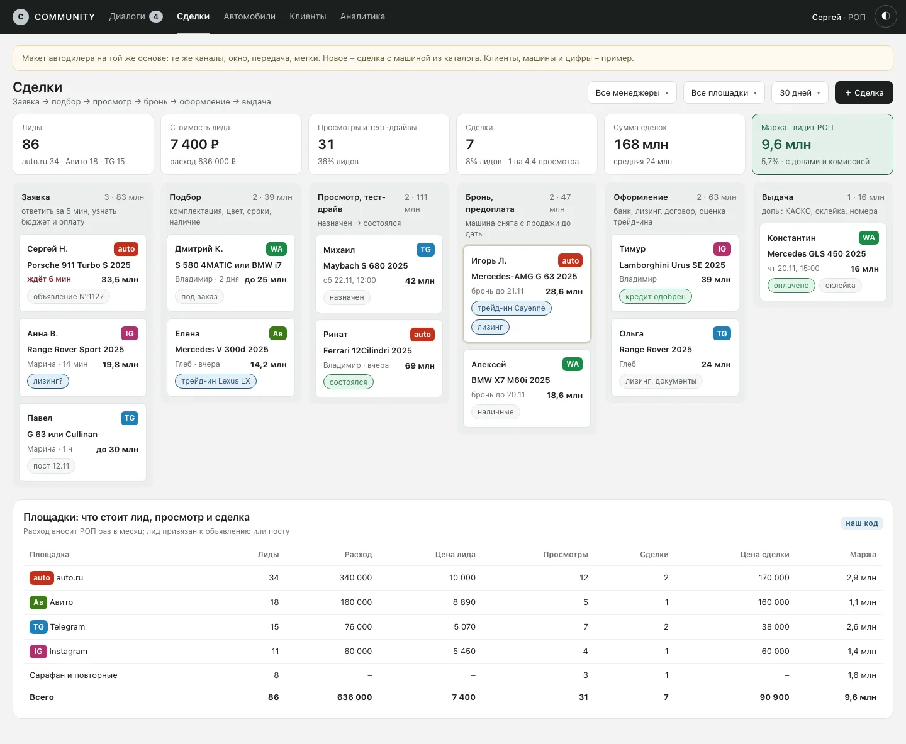
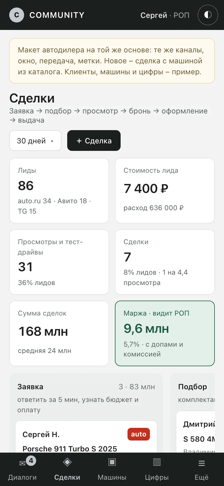
Открыть макет «Воронка продаж машин»
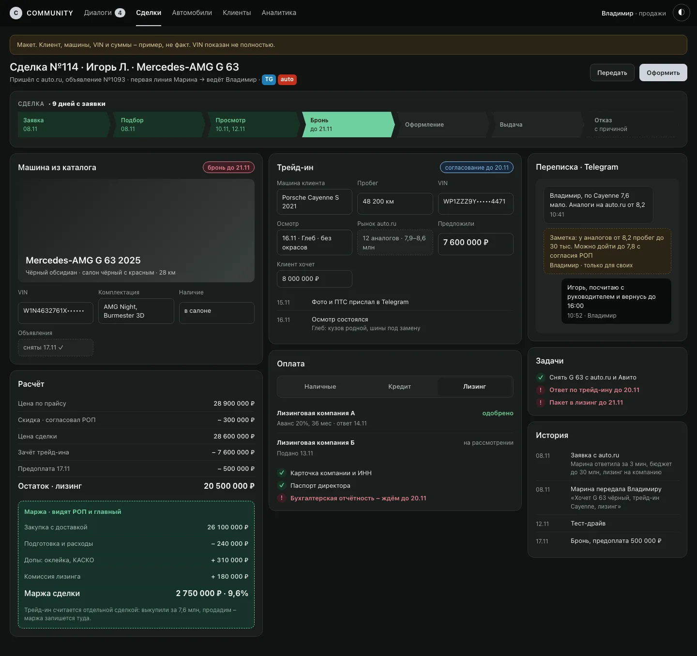
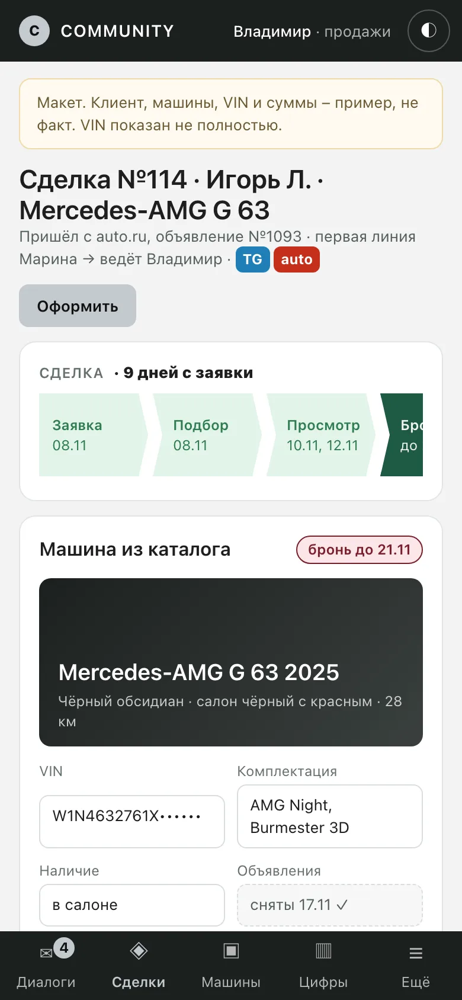
Открыть макет «Карточка сделки»
Воронка и карточка
- Воронка: Заявка → Подбор (бюджет, оплата, сроки) → Просмотр / тест-драйв (назначен → состоялся) → Бронь и предоплата (машина снята с продажи до даты) → Оформление (наличные, кредит, лизинг, трейд-ин) → Выдача (КАСКО, оклейка, номера). Отказ с причиной: купил у другого, не одобрили кредит, мало дали за трейд-ин, машина ушла, пропал.
- Карточка сделки: машина из каталога (VIN, комплектация, цвет, пробег, цена, бронь), расчёт (прайс, скидка, зачёт трейд-ина, предоплата, остаток), трейд-ин (машина клиента, осмотр, рынок по аналогам, предложили / хочет), оплата (банки или лизинговые компании, одобрение, документы), допы, задачи, переписка и история.
- Маржа – блок, который видят только руководитель отдела продаж и главный: закупка, расходы, допы, комиссия банка. Трейд-ин – отдельная сделка, его маржа пишется туда.
- Лид привязан к объявлению: видно, какие машины и посты дают заявки.
Роли автодилера
| Роль | Что делает |
|---|---|
| Первая линия (лидогенерация) | отвечает на площадках и в мессенджерах за 5 минут, узнаёт бюджет и способ оплаты, назначает просмотр, передаёт менеджеру |
| Менеджер продаж | ведёт сделку от подбора до выдачи, трейд-ин и банк |
| Руководитель отдела продаж (РОП) | раздаёт каналы, согласует скидки сверх лимита, видит маржу, вносит расходы площадок |
| Оценщик трейд-ина | осмотр и цена; часто это тот же менеджер |
| Наблюдатель (собственник) | только цифры |
Аналитика автодилера
Стоимость лида, просмотра и сделки по площадкам (auto.ru, Авито, Telegram, Instagram, сарафан), конверсия лид → просмотр → бронь → сделка, срок сделки в днях, маржа по менеджеру и площадке, сколько дней машина висит в продаже.
Что общее, что своё
| CRM TEYES / EV | Автодилер | |
|---|---|---|
| Движок, окно, каналы, мосты | Chatwoot + наши мосты | то же |
| Линии, каналы на менеджера, передача, метки | так, как в разделах 1–2 | то же, линии – «лидогенерация» и «продажи» |
| Главная единица | разговор + поле «Стадия» | сделка – своя запись рядом с разговором (Chatwoot сделок не знает) |
| Воронка | Новый → … → Оплатил | Заявка → … → Выдача |
| Карточка | машина клиента, услуга, сумма | машина из каталога, VIN, трейд-ин, кредит или лизинг, допы |
| Каталог | прайс услуг | каталог машин; у Community уже есть сборщик с auto.ru (41 машина, 13.10) |
| Деньги | сумма оплаты | цена, скидка, предоплата, маржа |
| Площадки | Max, Telegram, WhatsApp, ВК, сайт, звонки | плюс чаты auto.ru и Авито – проверить, есть ли у площадок доступ к переписке для дилера; если нет – звонки и ручной ввод |
5. Этапы, сроки и вопросы: начать с Chatwoot как есть, свой экран и ИИ – потом
Что даёт Chatwoot, что пишем сами
| Нужно | Chatwoot сам | Наш код |
|---|---|---|
| Линии | команды «Первая линия», «Вторая линия» (уже заведены) | – |
| Каналы на менеджера | участники канала | состояние ● / ○ / – и кому падают новые |
| Раздача | по кругу среди тех, кто в сети | повторный – к прежнему; потолок открытых – проверить на 4.19 |
| Передача | смена ответственного и команды, заметки, массовые действия | обязательная заметка, таймер принятия, «привёл» |
| Статусы | открыт, отложен до ответа или до даты, закрыт | – |
| Стадии, метки, поля | поля со списком, метки | обязательность перед закрытием, перенос стадий |
| Скорость | отчёты по менеджерам и командам | доля «в срок» в нашей аналитике |
| Деньги, источники, потери | – | analitika.py |
| ИИ-бот | подключение бота к каналу | сам бот и база знаний |
Этапы
| Этап | Что входит | Часы (оценка) | Деньги | Срок |
|---|---|---|---|---|
| 1. Запуск на 2–3 менеджера | операторы, команды, участники каналов, часы (3 ч); метки с приставками, новые поля, новая воронка и перенос (4 ч); правило «новый → первая линия» и раздача по кругу (3 ч); передача шаблоном и регламент на страницу (2 ч); контролёр-минимум: закрыто без полей, передачу не взяли, «отложен» просрочен (6 ч); аналитика по менеджерам, линиям, деньгам (6 ч); тесты и выкладка (3 ч) | 27 | ≈ 27 000 ₽ | 3–4 дня |
| 2. Свой экран менеджера и главного | экран оператора, как советовал 18.11 (≈ 88 ч); окно передачи с обязательной заметкой и таймером (10 ч); настройки «каналы и менеджеры» (12 ч); раздача «повторный – к прежнему», потолок, дежурный (8 ч); запрет закрытия без полей (4 ч) | ≈ 122 | ≈ 122 000 ₽ | ≈ 15 дней |
| 3. Деньги и расходы | расходы по источникам, цена записи, отчёт потерь (16 ч); сверка с «АвтоДилер Онлайн» по телефону (16 ч) | 32 | ≈ 32 000 ₽ | 4 дня |
| 4. ИИ (опция) | см. ниже | 16 + 72 | ≈ 88 000 ₽ + расход модели | после 4–6 недель живых данных |
| Автодилер | сделка как своя запись (40 ч), каталог с импортом auto.ru (24 ч), карточка: трейд-ин, оплата, допы (40 ч), доска-воронка (16 ч), аналитика площадок и маржи (24 ч), разведка и мосты auto.ru и Авито (32 ч) | ≈ 176 | ≈ 176 000 ₽ | ≈ 22 дня после этапа 2 |
Час = 1000 ₽, день = 8 часов. Все сроки и суммы – оценка.
ИИ-агенты – опция, без обещаний
- Контролёр (сначала без ИИ, на правилах): клиент ждёт дольше 5 минут, передачу не приняли, закрыли без метки и стадии, «отложен» просрочен, «назвали цену» без касания 3 дня. Пишет менеджеру заметку, тебе – сводку. Часть уже есть в оповещениях (клиент ждёт > 10 мин, незаполненные карточки в сводке 9:00). Потом ИИ может проверять сам ответ: спросил ли машину, назвал ли цену (≈ 16 ч).
- Бот первой линии с базой знаний: отвечает на простое (адрес, часы, что входит, совместимость по базе «Подбора»), собирает марку, год и телефон и передаёт человеку с той же заметкой из трёх строк. Начинать с ночи и выходных, когда людей нет. Chatwoot умеет подключать такого бота к каналу; сам бот и база – наш код (≈ 72 ч). Только после 4–6 недель живых переписок – на них проверяем.
- Заполнитель: вытаскивает из переписки машину, год, телефон и предлагает поля, менеджер подтверждает. Позже.
Вопросы
- С чего начинаем. А – этап 1 на Chatwoot как есть, экран потом (≈ 27 000 ₽, 3–4 дня). Б – сразу этапы 1 и 2 (≈ 149 000 ₽, ≈ 19 дней). В – только настройка без кода: команды, каналы, метки, регламент (≈ 8 000 ₽, 1 день; передача без обязательной заметки, деньги не считаем). Совет – А.
- Как раздаём новые. А – по кругу среди тех, у кого канал и кто на смене (входит в этап 1). Б – плюс повторный клиент к прежнему менеджеру (+ ≈ 8 000 ₽, 1 день). В – вручную раздаёшь ты (0 ₽, но ты становишься узким местом). Совет – Б.
- Деньги в аналитике. А – сумму вводит менеджер при «Оплатил» (входит в этап 1). Б – ночная сверка с «АвтоДилер Онлайн» по телефону (≈ 16 000 ₽, 2 дня, если в их выгрузке есть телефон). В – чеки кассы через ОФД (≈ 24 000 ₽, 3 дня, сопоставление неточное). Совет – А сейчас, Б следом.
- TEYES и EV. А – один кабинет, бренд в названии канала, фильтр в аналитике (0 ₽). Б – два кабинета Chatwoot (≈ 6 000 ₽, полдня; у тебя два входа, отчёты раздельно). Совет – А.
- Что значит «автодилер». А – CRM для продажи машин, как в разделе 4 (≈ 176 000 ₽, ≈ 22 дня после этапа 2). Б – переписать «АвтоДилер Онлайн» (запись, заказ-наряды, касса) внутрь нашей CRM: оценка после разбора их программы, грубо 30–45 дней. В – оба, сначала А. Совет – скажи, что имел в виду; рисовал А.
- Часы и дежурный. А – пн–пт 11–19, как на сайте, вне часов автоответ (0 ₽). Б – плюс суббота (0 ₽, настройка). В – плюс дежурный вечером по графику с пушем на «срочно» (≈ 4 000 ₽, полдня). Совет – А, пока не скажешь про субботу.
- ИИ. А – контролёр на правилах в этапе 1, ИИ потом (входит). Б – плюс ИИ-бот ночью на первой линии после 4–6 недель живых данных (≈ 72 000 ₽, ≈ 9 дней + расход модели). В – ИИ пока не обсуждаем. Совет – А.
Что раскрыть
- Каналы на менеджера: как ● / ○ / – ложится на участников каналов Chatwoot.
- Передача: что именно видит второй менеджер и как работает таймер.
- Аналитика: какие поля завести первыми и как считать «привёл» и «записал».
- Автодилер: где хранить сделку и что с чатами auto.ru и Авито.